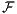
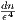
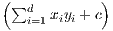
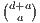

Abstract
This note describes how to kernelize Badoiu and Clarkson’s algorithm [1] to compute approximations of the smallest enclosing balls in the feature space induced by a kernel.
This column is also available in pdf: filename kernelCoreSetMEB.pdf
Let = {p1,…,pn} be a finite point set. In ℝd, the Smallest Enclosing Ball (SEB) SEB() with radius r(SEB()) is fully determined by s points of lying on the boundary sphere [15, 9], with 2 ≤ s ≤ d + 1 (assuming general position with no d + 2 cospherical points). Computing efficiently the SEB in finite dimensional space has been thoroughly investigated in computational geometry [5].
A (1 + ϵ)-approximation of the SEB is a ball covering with radius (1 + ϵ)r(SEB()). A simple iterative approximation algorithm [1] (BC algorithm) proceeds iteratively as follows: Set c(0) = p1 and update the current center as
In machine learning, one is interested in defining the data domain [13]. For example, this is useful for anomaly detection that can be performed by checking whether a new point belongs to the domain (inlier) or not (outlier). The Support Vector Data Description [13, 14] (SVDD) defines the domain of data by computing an enclosing ball in the feature space  induced by a given kernel k(⋅,⋅) (e.g., polynomial or Gaussian kernels). The Support Vector Clustering [3] (SVC) further builds on the enclosing feature ball to retrieve clustering in the data space.
Let k(⋅,⋅) be a kernel [12] so that k(x,y) = ⟨Φ(x),Φ(y)⟩ (kernel trick) for a feature map Φ(x) : ℝd → ℝD, where ⟨⋅,⋅⟩ denotes the inner product in the Hilbert feature space F. Denote by = {ϕ1,…,ϕn} the corresponding feature vectors in F, with ϕi = Φ(pi). SVDD (and SVC) needs to compute SEB().
We can kernelize the BC algorithm [1] by maintaining an implicit representation of the feature center φ = ∑ i=1nαiϕi where α ∈ Δn is a normalized unit positive weight vector (with Δn denoting the (n- 1)-dimensional probability simplex). The distance between the feature center φ = ∑ iαiϕ(pi) = ∑ iαiϕi and a feature point ϕ(p) is calculated as follows:
Therefore at iteration i, the farthest distance of the current center φi to a point of in the feature space can be computed using the implicit feature center representation: maxj∈[d]∥φi - ϕ(pj)∥. Denote by fi the index of the farthest point in F. Then we update the implicit representation of the feature center by updating the weight vector α as follows:
Observe that at iteration i, at most i + 1 coordinates of α are non-zero (sparse implicit representation), so that the maximum distance of the center to the point set can be computed via Eq. 2 in O(ni2). Thus it follows that the kernelized BC algorithm costs overall O()-time. The proof of the approximation quality of the BC algorithm relies on the Pythagoras’s theorem [6, 7] that holds in finite-dimensional Hilbert spaces. Although we used an implicit feature map Φ (e.g., Gaussian kernel feature map), we can approximate feature maps by finite-dimensional feature maps using the randomized Fourier feature maps [11].
This note is closely related to the work [4] where the authors compute a feature SEB for each class of data (points having the same label), and perform classification using the Voronoi diagrams defined on the feature (approximated) circumcenters.
Notice that the choice of the kernel for SVDD/SVC is important since the feature SEB has at most D + 1 support vectors (without outliers) in general position, where D is the dimension of the feature space. Thus for a polynomial kernel, the number of support vectors is bounded (and so is the number of clusters retrieved using SVC). Another byproduct of the kernelized BC algorithm is that it proves that the feature circumcenter is contained in the convex hull of the feature vectors (since α encodes a convex combination of the feature vectors).
The feature map of the polynomial kernel kP(x,y) = a (with c ≥ 0) is finite-dimensional (F = ℝD with D = ). For a = 2, we get the explicit feature map:
The feature map ΦG(x) of the Gaussian kernel kG(x,y) = exp(-γ∥x - y∥2) (Radial Basis Function, RBF) is infinite-dimensional (D = ∞):
[1] Mihai Badoiu and Kenneth L Clarkson. Smaller core-sets for balls. In Proceedings of the fourteenth annual ACM-SIAM symposium on Discrete algorithms, pages 801–802. Society for Industrial and Applied Mathematics, 2003.
[2] Mihai Bădoiu and Kenneth L Clarkson. Optimal core-sets for balls. Computational Geometry, 40(1):14–22, 2008.
[3] Asa Ben-Hur, David Horn, Hava T Siegelmann, and Vladimir Vapnik. Support vector clustering. Journal of machine learning research, 2(Dec):125–137, 2001.
[4] Yaroslav Bulatov, Sachin Jambawalikar, Piyush Kumar, and Saurabh Sethia. Hand recognition using geometric classifiers. Biometric Authentication, pages 1–29, 2004.
[5] Bernd Gärtner. Fast and robust smallest enclosing balls. Algorithms-ESA99, pages 693–693, 1999.
[6] Richard V Kadison. The pythagorean theorem: I. the finite case. Proceedings of the National Academy of Sciences, 99(7):4178–4184, 2002.
[7] Richard V Kadison. The pythagorean theorem: II. the infinite discrete case. Proceedings of the National Academy of Sciences, 99(8):5217–5222, 2002.
[8] Piyush Kumar, Joseph SB Mitchell, E Alper Yildirim, and E Alper Yldrm. Computing core-sets and approximate smallest enclosing hyperspheres in high dimensions. In ALENEX), Lecture Notes Comput. Sci. Citeseer, 2003.
[9] Frank Nielsen and Richard Nock. On the smallest enclosing information disk. Information Processing Letters, 105(3):93–97, 2008.
[10] Richard Nock and Frank Nielsen. Fitting the smallest enclosing Bregman ball. In ECML, pages 649–656. Springer, 2005.
[11] Ali Rahimi and Benjamin Recht. Random features for large-scale kernel machines. In Advances in neural information processing systems, pages 1177–1184, 2008.
[12] Bernhard Scholkopf and Alexander J. Smola. Learning with Kernels: Support Vector Machines, Regularization, Optimization, and Beyond. MIT Press, Cambridge, MA, USA, 2001.
[13] David MJ Tax and Robert PW Duin. Support vector domain description. Pattern recognition letters, 20(11):1191–1199, 1999.
[14] David MJ Tax and Robert PW Duin. Support vector data description. Machine learning, 54(1):45–66, 2004.
[15] Emo Welzl. Smallest enclosing disks (balls and ellipsoids). New results and new trends in computer science, pages 359–370, 1991.